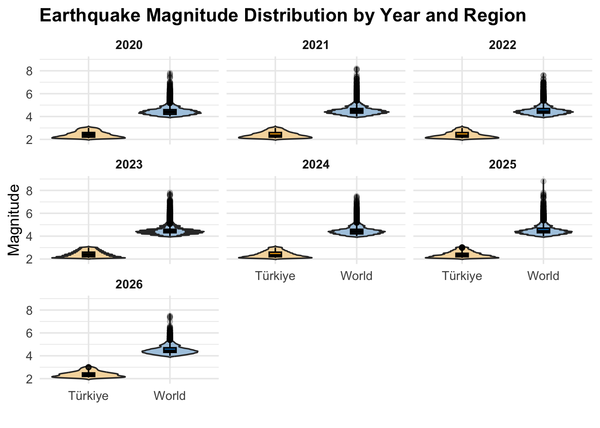
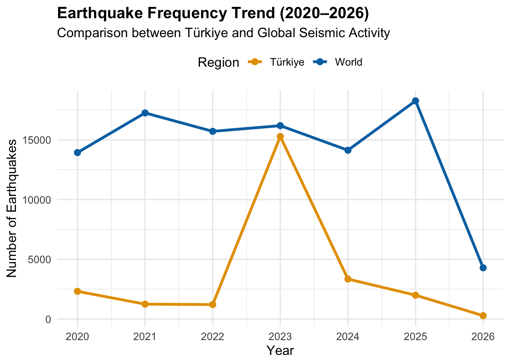
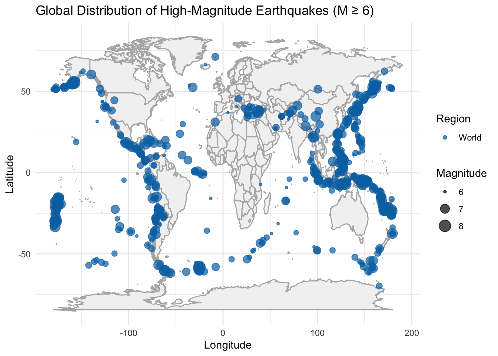

Earthquake Analysis of Türkiye (2020-2026)
Abstract
This study analyzes earthquake activity in Türkiye between 2020 and 2026 using data obtained from AFAD, with a comparative perspective based on global earthquake data from the United States Geological Survey (USGS). The objective is to identify temporal trends and spatial patterns in seismic activity.
Exploratory analysis shows that earthquake magnitudes remain relatively stable over time for both Türkiye and global datasets. In contrast, frequency-based analysis reveals significant variation, particularly in Türkiye, where a noticeable increase in earthquake occurrences is observed after 2023. Spatial analysis demonstrates that high-magnitude earthquakes are concentrated along major tectonic boundaries such as the Pacific Ring of Fire, while Türkiye’s seismic activity is more localized.
The findings suggest that earthquake frequency is a more effective metric than magnitude for understanding temporal trends, and that recent changes in Türkiye are primarily driven by regional tectonic dynamics.
1. Project Overview and Scope
Türkiye is located on major tectonic fault lines and is highly prone to seismic activity. Understanding earthquake patterns is essential for risk assessment and disaster preparedness.
This study analyzes earthquake data recorded between 2020 and 2026 using data obtained from AFAD. The primary objective is to identify temporal trends and spatial patterns in earthquake occurrences.
Special attention is given to the changes observed after the 2023 Kahramanmaraş earthquakes, which represent a significant seismic event in Türkiye. The study aims to determine whether observed patterns are driven by regional dynamics or reflect broader global seismic behavior.
2. Data and Preprocessing
2.1 Data Source
The dataset used in this study was obtained from AFAD (Disaster and Emergency Management Presidency). To enable comparative analysis, global earthquake data from the United States Geological Survey (USGS) was also incorporated.
2.2 Dataset Description
The dataset contains earthquake records in Türkiye between 2020 and 2026 and includes 124,701 observations and 9 variables. Key variables used in the analysis include magnitude, latitude, longitude, and date.
2.3 Reason of Choice
Türkiye is a country deeply affected by seismic activity due to its geographical location on major fault lines. The 2023 Kahramanmaraş earthquakes highlighted the importance of data-driven disaster management. This dataset was selected to analyze earthquake patterns using analytical tools and visualizations.
2.4 Preprocessing Steps
The raw data required several preprocessing steps before analysis. The date variable was converted into POSIXct format, and magnitude values were transformed into numeric format. Only earthquakes between 2020 and 2026 were included, and events with magnitude greater than 2 were selected to remove insignificant observations.
These steps ensured that the dataset was clean, consistent, and suitable for analysis.
After preprocessing, the final dataset contains 25,668 observations.
2.5 Global Data Integration
Global earthquake data from USGS was standardized and merged with the Türkiye dataset. Both datasets were combined into a single structure with a categorical variable indicating the region (Türkiye or World), allowing direct comparison between regional and global seismic activity.
3. Analysis
3.1 Exploratory Data Analysis
An exploratory data analysis was conducted to examine the distribution of earthquake magnitudes across years and regions.
The visualization shows that median magnitude values remain relatively stable over time for both Türkiye and global datasets. This indicates that magnitude does not exhibit strong temporal variation.
However, global data displays a wider spread and a higher presence of extreme values. These outliers are associated with large earthquakes occurring in highly active tectonic regions worldwide. In contrast, earthquake magnitudes in Türkiye are more concentrated within a narrower range.
While magnitude distributions remain stable, this does not imply that seismic activity is constant. To better understand temporal changes, it is necessary to examine earthquake frequency.
3.2 Trend Analysis
Building on the findings from magnitude analysis, frequency-based analysis provides a clearer understanding of how seismic activity evolves over time.
The results show that global earthquake activity remains relatively stable across the observed period. In contrast, Türkiye exhibits a noticeable increase in the number of earthquake events, particularly after 2023. This increase is strongly associated with major seismic events and aftershock sequences.
This highlights an important distinction: magnitude reflects the physical characteristics of earthquakes, whereas frequency captures variations in seismic activity levels.
The observed increase in Türkiye suggests that recent changes are driven by regional tectonic dynamics rather than global trends. However, frequency alone does not fully explain these changes. Spatial analysis is required to identify the geographic concentration of seismic activity.

3.3 Methodological Considerations
This study focuses on descriptive and exploratory analysis. Magnitude was found to be limited in identifying temporal trends, while frequency provided more meaningful insights.
Advanced modeling techniques such as clustering and spatial analysis could further enhance the understanding of seismic patterns and are recommended for future research.
3.4 Results Interpretation
The combined findings from magnitude, frequency, and spatial analysis reveal a coherent pattern.
Magnitude remains stable over time, while frequency shows significant variation, particularly in Türkiye after 2023. This indicates that changes in seismic activity are not related to earthquake strength but to the number of events.
Spatial patterns further explain these differences, showing that seismic activity is concentrated in specific regions rather than being uniformly distributed.
3.5 Spatial Analysis
The spatial analysis reveals that high-magnitude earthquakes are concentrated along major tectonic boundaries, particularly in regions such as the Pacific Ring of Fire.
In contrast, seismic activity in Türkiye is primarily concentrated along the North Anatolian Fault and the East Anatolian Fault. These regions are characterized by moderate but frequent earthquakes.
This spatial distribution explains the differences observed in previous analyses and confirms that global seismic patterns are strongly influenced by specific high-activity regions.

4. Results and Key Takeaways
4.1 Main Findings
Earthquake magnitudes remain relatively stable over time, while earthquake frequency varies significantly, particularly in Türkiye after 2023.
4.2 Implications
Frequency-based analysis provides a more accurate understanding of seismic trends than magnitude. These findings can support improved risk assessment and disaster preparedness strategies.
4.3 Limitations and Future Work
The study is limited to descriptive analysis. Future work may include advanced modeling techniques such as clustering and predictive analysis to further investigate seismic patterns.
5. Conclusion
This study demonstrates that earthquake frequency, rather than magnitude, is a more effective indicator of temporal changes in seismic activity. The findings show that seismic activity in Türkiye has increased significantly after 2023 due to regional tectonic processes.
Spatial analysis confirms that global seismic activity is concentrated along major tectonic boundaries, while Türkiye exhibits more localized patterns. Together, these insights provide a comprehensive understanding of earthquake dynamics and highlight the importance of regional analysis in seismic studies.